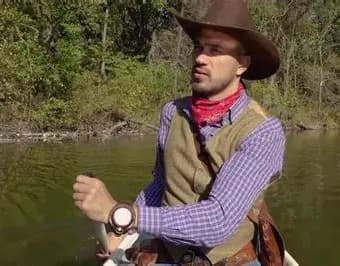
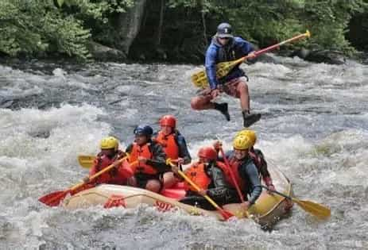
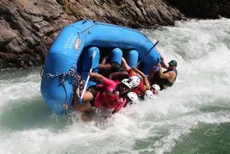
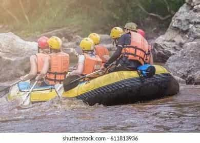
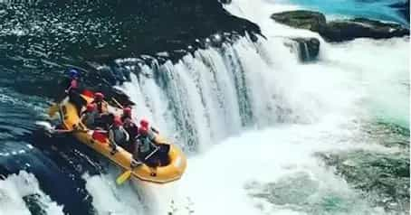
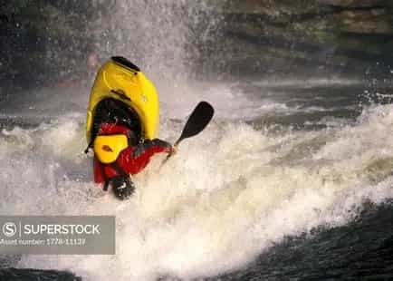

Our purpose is to provide the greatest, most bestest rafting trips of all time. With only a 3% Fatality rate, we ensure your safety, so you can focus on catching waves and spending time with you loved ones.

Our purpose is to provide the greatest, most bestest rafting trips of all time. With only a 3% Fatality rate, we ensure your safety, so you can focus on catching waves and spending time with you loved ones.
Our company was founded in 1842 by our found, McFurcklegucket. While trying to cross the Orgeon Trail, he experience must excitement rafting his wagon accross many treacherous waters, and despite losing his family, he figured it was an experience everyone should have. Honestly, now I'm just filling out this side to make it look about the same length as the other side. Yes, I know it says you instead of your, but I can fill more room with this sentence than fixing it.

Now to truly test the amount of nonesense I can come up with, McFurcklegucket had a son named John Whitewater Rafting. So believe that He invented Whitewater rafting, but was actually just named after it. Despite this coincidence, he was a pioneer in Whitewater rafting, and was the first to go whitewater rafting without a raft. Many today call this "drowning" but we honor our heritage every year by sending the employee with the least amount of merchandise sales down the Terminator rapid, found in Chile (not the restaurant)




